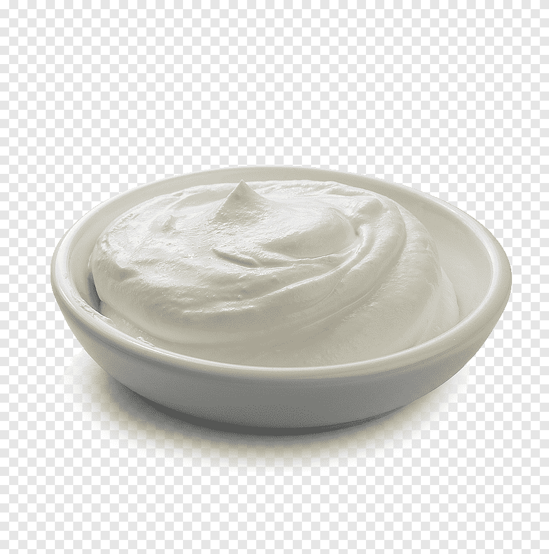

Jogurt naturalny
Wprowadzenie
Jogurt naturalny, znany także jako jogurt typu „natural”, to podstawowy rodzaj jogurtu, który jest produkowany przez fermentację mleka przez bakterie jogurtowe. Oto kilka istotnych cech jogurtu naturalnego:
Proces fermentacji
Jogurt naturalny powstaje poprzez fermentację mleka przy użyciu bakterii jogurtowych, takich jak Lactobacillus bulgaricus i Streptococcus thermophilus. Ten proces fermentacji powoduje przekształcenie laktozy (cukru mlecznego) w kwas mlekowy, co nadaje jogurtowi charakterystyczny kwaśny smak.
Bogactwo probiotyków
Jogurt naturalny jest bogatym źródłem probiotyków, czyli korzystnych bakterii, które wspomagają zdrowie układu pokarmowego. Regularne spożywanie jogurtu naturalnego może pomóc w utrzymaniu równowagi flory bakteryjnej w jelitach.
Niski poziom tłuszczu
W zależności od wariantu, jogurt naturalny może mieć różne zawartości tłuszczu. Wersje o niskiej zawartości tłuszczu są często wybierane przez osoby dbające o dietę.
Wysoka zawartość białka
Jogurt naturalny jest również bogatym źródłem białka, co czyni go atrakcyjnym dla osób aktywnych fizycznie oraz tych, którzy starają się zwiększyć spożycie tego składnika odżywczego.
Wszechstronność
Jogurt naturalny można spożywać samodzielnie lub używać jako składnik wielu potraw. Doskonale nadaje się do dodawania do musli, owoców, smoothie, czy też jako baza do przygotowywania sosów czy dipów.
Dostępność różnych wariantów
Jogurt naturalny jest dostępny w różnych wariantach, w tym wersjach o różnej zawartości tłuszczu oraz z dodatkami, takimi jak owoce, miód, czy orzechy.
Jogurt naturalny, ze względu na swoje właściwości odżywcze i wszechstronność, jest popularnym elementem wielu diet i stanowi zdrowy dodatek do codziennej rutyny żywieniowej.